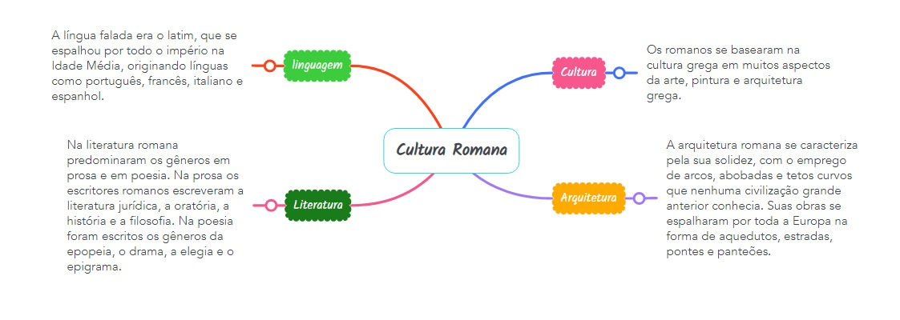

Cultura
Cultura da Roma Antiga

Cultura Romana
A cultura da Roma Antiga é um dos legados mais significativos da história ocidental. A civilização romana desenvolveu-se ao longo de séculos, começando como uma pequena cidade-estado na península itálica e expandindo-se para se tornar um vasto império que abrangia grande parte da Europa, norte da África e partes do Oriente Médio.
A cultura romana foi influenciada por várias fontes, incluindo a cultura etrusca, grega e outras culturas mediterrâneas. Ela evoluiu ao longo do tempo, passando por diferentes períodos, como a República Romana e o Império Romano.
Religião
A religião na Roma Antiga caracterizou-se pelo politeísmo, com elementos que combinaram influências de diversos cultos ao longo de sua história. Desse modo, em sua origem, crenças etruscas, gregas e orientais foram sendo incorporadas aos costumes já tradicionais de acordo com sua efetividade.
A ideia de efetividade de um ritual para agradar a um deus ou deuses é a ideia que permeia o cenário religioso da época. A noção de nossa sociedade de tradição judaico-cristã quanto à religião liga os rituais à fé, algo que não era levado em conta pelos romanos. Para eles os deuses simplesmente existiam, não havia necessidade de questionar esse fato.
Os deuses dos antigos romanos, à semelhança dos antigos gregos, eram antropomórficos, ou seja, eram representados com a forma humana e possuíam características como qualidades e defeitos de seres humanos.
O Estado romano propagava uma religião oficial que prestava culto aos grandes deuses, como, por exemplo, Júpiter, pai dos deuses; Marte, deus da guerra, ou Minerva, deusa da sabedoria e da justiça. Em honra desses deuses eram realizados festivais, jogos, sacrifícios e outras cerimônias. Posteriormente, diante da expansão militar que conduziu ao império, muitos deuses das regiões conquistadas também foram incorporados aos cultos romanos, assim como alguns deuses romanos foram incorporados às regiões conquistadas.
No âmbito privado, os cidadãos, por sua vez, tradicionalmente buscavam proteção nos espíritos domésticos, os chamados lares, e nos espíritos dos antepassados, os penates, aos quais rendiam culto dentro de casa.
Arquitetura
A Arquitetura Romana foi uma importante manifestação artística dos romanos na antiguidade, que privilegiavam as obras utilitárias e alcançaram grande eficiência na construção de aquedutos, banhos públicos, pontes e mercados.A arquitetura romana também foi expressiva na construção de templos, palácios, pórticos, tribunais, mosteiros e igrejas.
Características da Arquitetura Romana:
Luxo e grandiosidade: influências da cultura grega.
Solidez das construções: herdada dos etruscos.
Simetria e a harmonia: conseguidas através de formas regulares. Influência dos povos italianos.
De tal modo, os romanos introduziram na arquitetura novos materiais, como o uso do cimento, e também novas técnicas.
O arco, desconhecido dos gregos, foi uma inovação dos romanos, utilizado sobretudo nas construções destinadas a comemorar as grandes vitórias militares.
Exemplos da Arquitetura Romana
Por toda a extensão do Império Romano, importantes construções foram executadas, entre elas: Coliseu, Panteão,Arco de Constantino e entre outros.
Literatura
A literatura romana poderia ser classificada como “auditiva”. Era uma leitura que se ouvia. Essa característica, tão diversa da forma como se lê na contemporaneidade, tem um profundo impacto na apreciação do texto e em sua composição. Nos séculos I e II d.C., a recitação era a principal forma de divulgar uma obra, principalmente as obras literárias. A leitura silenciosa era feita com textos em que o conteúdo era importante e o estilo importava pouco, como documentos jurídicos ou sobre negócios. As recitações ocorriam de quatro maneiras: privada, pública, através de concursos literários e o recitar durante a composição do texto. A recitação pública era a principal forma de divulgar textos nesse período, equivalente a publicação moderna. Assim que o autor envia a cópia de seu trabalho a alguém, o controle da circulação da obra se perde. Publicare é tornar público, oralmente ou de forma escrita. É verdade que a circulação dos textos, de fato, se dava através dos livros, mas a recitação era importante não só no quesito divulgação, mas também de produção do texto. O apreciar do texto de maneira oral ia inclusive além das leituras, que eram quase que obrigações sociais. Em banquetes e outros momentos festivos, poemas eram recitados aos participantes. As famílias abastadas contavam inclusive com lectores (escravos ou libertos) que eram especialistas em recitar. Portanto, percebe-se o peso da palavra oral na vida cotidiana dos romanos. O bom uso da palavra e o domínio dos temas e estilos do discurso buscam efeitos pré-determinados nos ouvintes, e tais habilidades constituem um valor essencial da cultura romana, que se liga a superposição da esfera pública diante da vida privada. A leitura transforma a recepção dos textos em uma experiência coletiva, de forma semelhante à contemplação de um monumento público, por exemplo. Logo, a palavra oral era um elemento principal nos textos romanos.
Linguagem
O latim, língua oficial do Império Romano, foi a pedra basilar para a edificação do que seriam as línguas românicas, ocorrendo esta evolução linguística sobretudo a partir da Idade Média. Difundido sobretudo entre os séculos VI e XIV, era utilizado maioritariamente pelos estratos mais cultos da sociedade, como o clero (são exemplos a Cúria Romana e a liturgia da Igreja Católica) e as chancelarias régias. Tal deve-se ao facto de a debilitação e término do Império Romano ter abalado a unidade linguística até então existente e começarem a sobrepor-se progressivamente as línguas e dialetos autóctones ou proto-românicos. Contudo, e dada a importância e a preponderância incontestáveis do latim até esta data, todas as chamadas línguas românicas se basearam na estrutura e na semântica latinas. Note-se que o latim falado no mundo romano se diferenciava de região para região e era intitulado de latim "vulgar" ou sermo vulgaris, pois era também influenciado pelos dialetos pré-existentes, que finalmente se sobrepuseram com marcas evidentes do latim por volta do século IX fazendo emergir as chamadas línguas românicas. Cerca do século VIII, Carlos Magno fez uma tentativa de ressuscitar a essência do Império Romano, tendo-se dado, portanto, extrema importância ao latim. Alcuíno de Iorque, originário de Inglaterra, e Paolo Diacono, italiano, foram algumas das mais relevantes personalidades que colaboraram no processo de reconstituição cultural levado a cabo durante o Império Carolíngio, que contudo não travou o crescimento e uso das línguas românicas.
